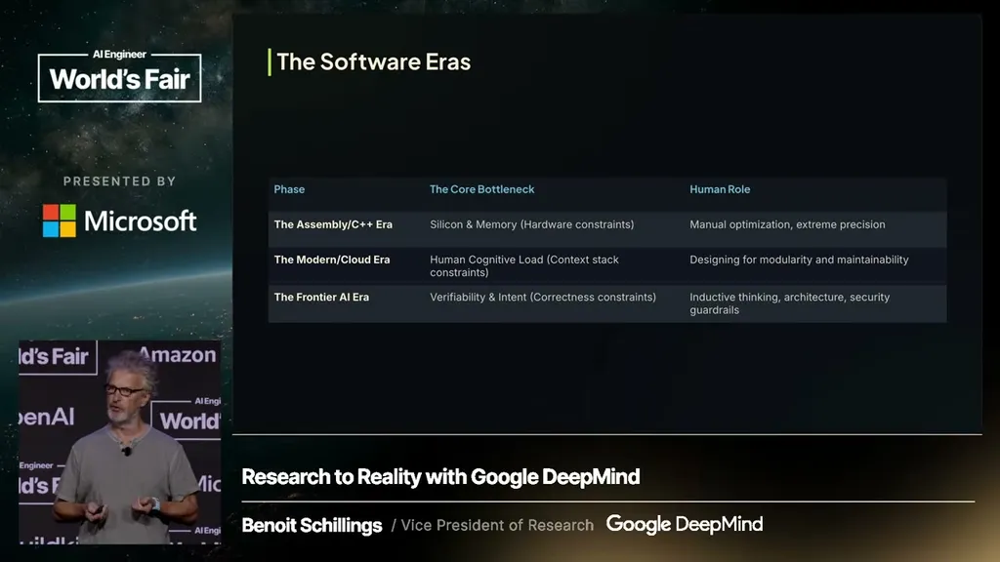
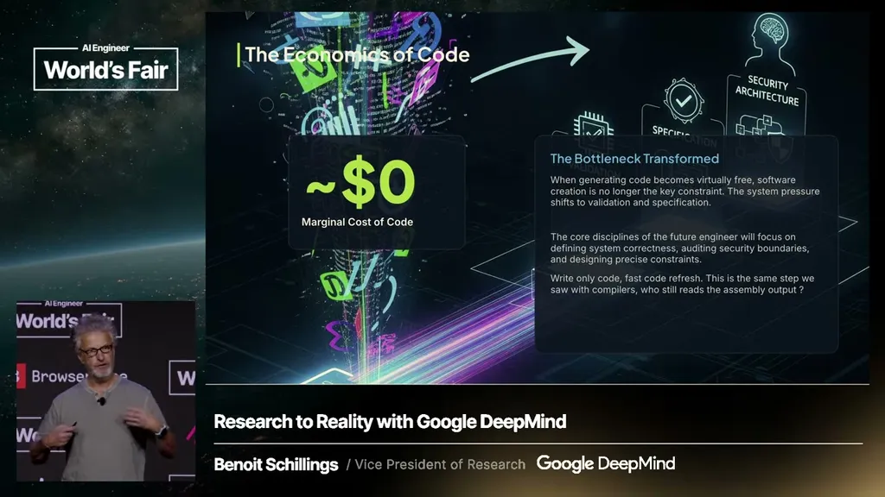
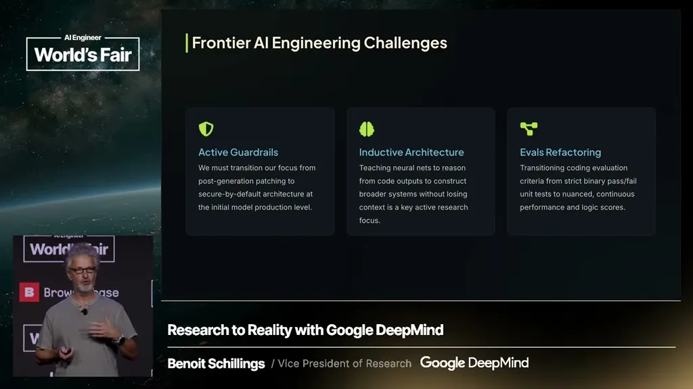

"Software engineering is not about writing code"
If you only read one thing
- Routine code-writing is "over" in Schillings's view; the frontier problem is now multi-step work across large, messy codebases, not syntax generation.
- With about 80% of new GitHub code now machine-generated, labs are shifting from human training data to self-play, where frontier code models create and judge their own challenges.
- He predicts humans will stop reading AI-generated code within a year, and warns vulnerability discovery/patching is becoming a permanent arms race rather than a one-time fix.
Schillings says he can no longer improve on functions Gemini writes for him and calls this "superhuman syntax generation." He frames the harder, still-open problem as multi-step software engineering in large codebases (his example: joining a company with 35 million lines of legacy PHP), not the mechanics of writing individual functions.
“Superhuman syntax generation. When is the last time I got Gemini to write a function for me?”
▶ watch at 06:53
He states that roughly 80% of new code added to GitHub is now machine-generated, which he says is closing off human-written code as a training data source. His team's response, following the AlphaZero playbook, is self-play: letting frontier code models generate their own challenges and judge the validity of their own answers.
“I think that 80% of the new code added to GitHub today is machine generated”
▶ watch at 09:33“Frontier model for code are able to do the same where they can create their own challenge. They can judge the validity of the answer.”
▶ watch at 10:06Schillings predicts that within a year, teams will let models generate code without anyone reviewing it, comparing this to how few people still check a compiler's assembly output. He separately criticizes SWE-bench as too narrow, since it only checks whether code runs and produces the right output rather than testing broader software-engineering judgment.
“I would predict that in one year we'll let Gemini or other model generate the code and nobody will actually look at it.”
▶ watch at 12:09“threebench verifies if a piece of code runs and produce the right output.”
▶ watch at 14:44
He points to models like Claude finding large numbers of vulnerabilities in existing code, and frames patching them as a never-ending process rather than a one-time cleanup, since more capable models will keep finding deeper issues.
“you've all seen the news of mythos looking at a piece of code and detecting a unreasonable number of vulnerability in that code”
▶ watch at 12:40Schillings says Google chose from the outset to make Gemini a multimodal model rather than a text-only one, arguing that pure token-sequence "thinking" has limits and that spatial or dynamic representations will matter more going forward.
“we made that choice from the onset that this would be a multimodal model that you know text was only one of the modality that Gemini would be able to apply”
▶ watch at 16:16


Underlying detail — every claim, typed and timestamped (7)
| Stance | Claim | t |
|---|---|---|
| asserts | Basic code-writing capability has crossed a threshold where Schillings can no longer improve on what the model produces. | 06:53 |
| asserts | The majority of new GitHub code is now machine-generated, cutting off the human-written data supply used to train coding models. | 09:33 |
| predicts | Frontier code models are moving toward generating and validating their own training challenges rather than relying on human-written examples. | 10:06 |
| predicts | Within a year, humans will stop reading AI-generated code before it ships. | 12:09 |
| warns | SWE-bench only checks whether code runs and produces correct output, which captures a small slice of real software engineering. | 14:44 |
| warns | As models get better at finding vulnerabilities in existing code, patching becomes a permanent process rather than a one-time fix. | 12:40 |
| asserts | Google built Gemini as multimodal from the start rather than text-only, betting that non-token representations matter for future reasoning. | 16:16 |
Machine-readable copy embedded in this page (script#ontology) and in the corpus ontology.